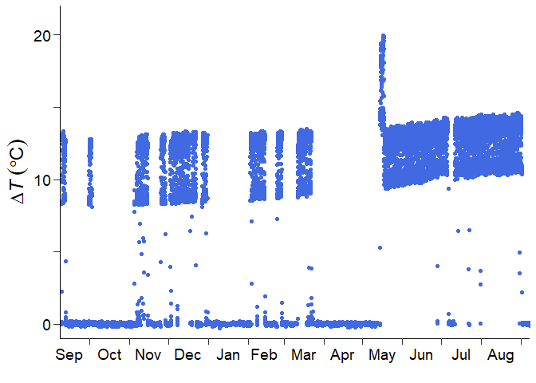

Introduction
fluxfixer provides a sophisticated protocol for post-processing raw time series, which can be applied not only to thermal dissipation sap flow data but also to other noisy time series, using classic statistical and machine-learning methods.
This vignette demonstrates how to use the main functions by showing the actual post-processing of sap flow data observed in Malaysia.
Installation
You can install the latest version of fluxfixer from CRAN with:
install.packages("fluxfixer")Or, you can install the development version from GitHub with:
# install.packages("remotes")
remotes::install_github("yhata86/fluxfixer")Then, load and attach the package.
Workflow
Now you can use various functions in the package. Please check the demonstration below, consisting of three sections.
The first section shows how to prepare input data suitable for the whole post-processing protocol. You can learn which variables are needed for the processes you want to conduct.
The second section explains the way to apply all the processes to the input data automatically. You will understand which arguments should be set correctly based on the input data and required processes.
The third section demonstrates how you apply each process step-by-step to the input data. This will be helpful if you are not satisfied with the automatic process result and modify the details of each process.
Data preparation
To begin with, you need to prepare an input data frame. This preparation depends on which type of time series you want to post-process.
For thermal dissipation sap flow time series
The variables listed in the table below are mandatory for each method to determine zero-flow conditions (SP: Successive predawn method; PD: Daily predawn method; MW: Moving window method; DR: Double regression method; ED: Environmental dependent method).
| Variable | Type | SP | PD | MW | DR | ED |
|---|---|---|---|---|---|---|
| Timestamp | POSIX.ct or POSIX.lt | ✔ | ✔ | ✔ | ✔ | ✔ |
| Numeric | ✔ | ✔ | ✔ | ✔ | ✔ | |
| Global solar radiation (W m-2) | Numeric | ✔ | ✔ | ✔ | ✔ | |
| Air temperature | Numeric | ✔ | ||||
| Vapor pressure deficit (hPa) | Numeric | ✔ |
is the temperature difference between sap flow probes. You can select the multiple methods at once during the automatic processing.
Here are the more details of each variable column.
Timestamp: A timestamp of class POSIXct or POSIXt, indicating the timings of the end of each measurement in local time. Any interval (typically 15 to 60 min) is allowed, but the timestamps must be equally spaced and arranged chronologically.
: A numeric value of the temperature difference between sap flow probes. The units should be in . It is acceptable to include missing values, but the label representing the missing value must be unique such as
-9999.Global solar radiation: A numeric value indicating incident short-wave radiation. The units should be in W m-2. If you choose the PD, MW, DR, or ED methods, the time series must be included and gap-filled previously. These methods use it only to define daytime, so you can use PPFD (photosynthetic photon flux density) or another variable with a strong correlation with global solar radiation. In such cases, you must modify the threshold value for daytime definition specified by the argument
thres_radiinrun_fluxfixer()orcalc_dtmax(). In case you have no radiative time series, this package offers thecalc_sw_in_toa()function that estimates the global solar radiation at the top of the atmosphere at a specific location. You can add this time series to your input data frame and determine the zero-flow conditions. See more details in?calc_sw_in_toa().Air temperature: A numeric value and its units should be in. If you select the ED method, this time series must be included and gap-filled previously.
Vapor pressure deficit (VPD): A numeric value representing the difference between saturated water vapor pressure and the actual partial water vapor pressure in the atmosphere. The units should be in hPa. If you select the ED method, this time series must be included and gap-filled previously. And even if you do not select the ED method, the VPD is recommended to be included in the input data frame to construct a more powerful random forest model for outlier detection and gap-filling processes, as the VPD typically controls the opening of plant stomata. In this case, you do not have to fill gaps in the time series previously.
Other variables: Even when you select only the SP method, you need to add as many drivers that influence sap flow dynamics as possible in the input data frame to construct a more powerful random forest model for outlier detection and gap-filling processes. For example, if you want to post-process sap flow data observed in a deciduous forest, you are recommended to include a time series representing forest leaf amount, such as LAI (leaf area index).
You can also include columns that are unrelated to the
post-processing, but be sure to indicate which variables are to be used
in the random forest construction when you execute
run_fluxfixer() by specifying
vctr_colname_feature.
For time series unrelated to thermal dissipation sap flow
In this case, the input data frame is required to have the columns below.
Timestamp: A timestamp of class POSIXct or POSIXt, indicating the timings of the end of each measurement in local time. Any interval is allowed, but the timestamps must be equally spaced and arranged chronologically.
Target variable: A numeric value of the variable you want to post-process. It is acceptable to include missing values, but the label representing the missing value must be unique such as
-9999.Other variables: You need to add as many drivers that influence targeted variable dynamics as possible in the input data frame to construct a more powerful random forest model for outlier detection and gap-filling processes.
You can also include columns that are unrelated to the
post-processing, but be sure to indicate which variables are to be used
in the random forest construction when you execute
run_fluxfixer() by specifying
vctr_colname_feature.
Automatic execution of all processes
This section shows how to use the function
run_fluxfixer() by post-processing half-hourly
time series observed in Malaysia from Sep. 2012 to Aug. 2013.
Even in the case you want to execute run_fluxfixer() for
non-sap-flow time series, the process is similar. But you need to set an
argument, skip_sapflow_calc, to TRUE (default
is FALSE), and the function skips the processes specific to
the sap flow data, such as the zero-flow conditions estimation and sap
flux density calculation.
Let’s start by loading the sample data frame.
## Load sample data
data("dt_noisy")This data frame contains the columns below.
-
time: Timestamp of the measurement end timing in local time -
dt: time series () -
p: Precipitation (mm) -
sw_in: Global solar radiation (W m-2) -
ta: Air temperature () -
vpd: Vapor pressure deficit (hPa) -
ws: Horizontal wind speed (m s-1) -
swc: Soil water content (m^3 m-3)}
You can check the details of the data frame in
?data("dt_noisy") if necessary. The target column is
dt, so check this time series visually first.

Or, you can check the time series in a specific period by the code below.
## Just for the visualization
# install.packages("ggplot2)
library(ggplot2)
## Set the period you want to check
time_head <- as.POSIXct("2012/09/01 00:30", tz = "Etc/GMT-8")
time_tail <- as.POSIXct("2013/09/01 00:00", tz = "Etc/GMT-8")
dt_noisy %>%
dplyr::mutate(dplyr::across(tidyselect::where(is.numeric),
~dplyr::na_if(., -9999))) %>%
ggplot2::ggplot()+
scale_x_datetime(limits = c(time_head, time_tail))+
geom_point(aes(time, dt), col = "royalblue")From this visualization, you would come up with some ideas for post-processing.
There is a short-term signal drift in May 2013. The short-term drift correction is needed.
There is no high-frequency noise contamination throughout the measurement period. The high-frequency noise filtering is not required.
Long-term gradual signal trend exists. Detrending is needed for preventing the underestimation of sap flux density.
Signal damping, which means the gradual decrease in signal standard deviation, did not occur. The signal damping correction is not required.
The sap flow sensor was replaced in May 2013, according to the information from a data provider. The measurement sub-period should be set.
Now, you are able to set appropriate arguments in
run_fluxfixer() and execute it.
## Specify the period of the short-term drift
time_drft_head <- as.POSIXct("2013/05/14 13:30", tz = "Etc/GMT-8")
time_drft_tail <- as.POSIXct("2013/05/17 15:00", tz = "Etc/GMT-8")
## Specify the sensor replacement timing
time_prd_tail <- as.POSIXct("2013/05/14 13:00", tz = "Etc/GMT-8")
## Run all processes automatically
result <-
run_fluxfixer(df = dt_noisy,
colname_time = "time",
colname_target = "dt",
vctr_time_drft_head = time_drft_head,
vctr_time_drft_tail = time_drft_tail,
vctr_time_prd_tail = time_prd_tail,
detrend = TRUE)Note that, in the default arguments, this function does not conduct the short-term drift correction, noise filtering, detrending, or signal damping correction. Also, only the SP method is applied by default to estimate zero-flow conditions.
The result data frame contains columns below.
time: The same timestamp as the input timestamp specified bycolname_time.raw: The same input time series specified bycolname_target.processed: The post-processed time seriesqc: A quality-control (QC) flag time series indicating the history of modifications to each data point. See more details in?run_fluxfixerdtmax_sp: (the maximum temperature difference between sap flow probes under zero-flow conditions) time series calculated by the SP method.fd_sp: (sap flux density) time series using calculated by the SP method.
You can confirm whether this function post-processed the raw time series appropriately by drawing the graph.

The blue and orange points represent the raw and processed time series. The function was able to remove error values and outliers, correct the short-term drift, fill missing values, and do detrending.
You can also check the time series in a specific period by the code below.
## Set the period you want to check
time_head <- as.POSIXct("2012/09/01 00:30", tz = "Etc/GMT-8")
time_tail <- as.POSIXct("2013/09/01 00:00", tz = "Etc/GMT-8")
result %>%
dplyr::mutate(dplyr::across(tidyselect::where(is.numeric),
~dplyr::na_if(., -9999))) %>%
ggplot2::ggplot()+
scale_x_datetime(limits = c(time_head, time_tail))+
geom_point(aes(time, raw), col = "royalblue", alpha = 0.01)+
geom_point(aes(time, processed), col = "orange", alpha = 0.1)If you want to know what happened in the automated process, let’s
move the following section. You will be able to learn how the raw data
is modified in each process, and use the run_fluxfixer()
function or other related functions more flexibly by setting various
arguments appropriately.
Step-by-step executions of each process
Data Input
For those who jumped into this section directly, please load the sample data first.
## Load sample data
data("dt_noisy")Let’s explore the functions deeply that comprise the automated
function, run_fluxfixer().
Anomaly correction
To begin with, you remove anomalies and correct the time series. This process is divided into three procedures: the absolute limit test, the short-term drift correction, and the high-frequency noise removal.
Absolute limit test
check_absolute_limits() removes out-of-range values by
setting lower and upper limits. By default, this function removes the
values less than 3 or more than 50, assuming the input vector is a
time series. You can set these threshold values according to the
reasonable range of the input time series by specifying
thres_al_min and thres_al_max arguments.
## Conduct the absolute limit test
df_all <-
dt_noisy %>%
dplyr::mutate(dt_al = check_absolute_limits(vctr_target = dt))You got the new column, dt_al, in the data frame. This
column indicates the
time series after the out-of-range value removal.
Short-term drift correction (optional)
modify_short_drift() corrects sudden changes in the
average in the time series over a short period (hours to days) specified
by vctr_time_drft_head and
vctr_time_drft_tail. Multiple short-term drifts can be
corrected at once using this function. This procedure uses a reference
period, defined as the number of days specified by
n_day_ref before and after the occurrence of the anomaly.
Then, the anomalous time series is standardized so that the 5th and 95th
percentile values of the anomalous and reference (non-anomalous) time
series match over this period. These percentile values are used instead
of the maximum and minimum values to ensure robustness against possible
outliers in the original or reference time series.
As indicated in the previous section, the input time series has a short-term signal drift in May 2013. So, you need to conduct this optional process.
## Specify the period of the short-term drift
time_drft_head <- as.POSIXct("2013/05/14 13:30", tz = "Etc/GMT-8")
time_drft_tail <- as.POSIXct("2013/05/17 15:00", tz = "Etc/GMT-8")
## Conduct the short-term drift correction
df_all <-
df_all %>%
dplyr::mutate(dt_sdc = modify_short_drift(vctr_time = time,
vctr_target = dt_al,
vctr_time_drft_head = time_drft_head,
vctr_time_drft_tail = time_drft_tail))The column dt_sdc represents the
time series after the correction.
High-frequency noise removal (optional)
filter_highfreq_noise() filters a time series with a
specific period by convolving it with a Gaussian window, removing
high-frequency noise. The period to be filtered can be specified by
vctr_time_noise. Also, you can modify the shape of the
Gaussian window by wndw_size_noise and
inv_sigma_noise arguments.
For the sample data, there is no high-frequency noise contamination. So, you do not have to conduct this optional process.
Outlier removal
The next step is to remove outliers in the target time series. This process consists of two procedures: Z-score outlier removal and random forest outlier removal.
Z-score outlier removal
remove_zscore_outlier() detects and removes outliers by
converting an original time series into a Z-score time series using a
moving window.
The Z-score is calculated by subtracting the average from the
original value and dividing it by the standard deviation. The input time
series is standardized using a moving window, and the data values are
converted to Z-scores. In this step, the width of the moving window,
specified by wndw_size_z, is set to 15 days by default,
centered on the target time point, and standardization is performed
individually for each time point in the time series. The upper and lower
limits of the Z-score, specified by thres_z (default: ±5),
are set, and data points outside that range are removed as outliers.
After the outliers have been removed, the Z-score is returned to the
original value using the original mean and standard deviation time
series, and standardization is performed again using a moving window to
remove additional outliers. These procedures are repeated until either
no more outliers are removed or the maximum number of iterations,
specified by n_calc_max (default: 10), is reached.
Users can define sub-periods across the entire time series using
vctr_time_prd_tail, and the Z-score conversion is performed
in each sub-period separately. This separated conversion is useful when
the input time series suddenly changes its nature, such as after a
sensor replacement.
For the sample data process, the sensor replacement occurred in May 2013. So, you are recommended to set the sub-period.
## Specify the sensor replacement timing
time_prd_tail <- as.POSIXct("2013/05/14 13:00", tz = "Etc/GMT-8")
## Conduct the Z-score outlier removal
df_z <-
remove_zscore_outlier(vctr_time = df_all$time,
vctr_target = df_all$dt_sdc,
vctr_time_prd_tail = time_prd_tail)
df_all <-
df_z %>%
dplyr::select(z_cleaned, avg_cleaned, sd_cleaned) %>%
dplyr::bind_cols(df_all, .)The column z_cleaned represents the standardized
time series after the Z-score outlier removal.
In some cases, for sap flow measurements, the input
time series may yield a signal that is attenuated for only a short
period, for example, when rainfall continues for days, causing the
moving window mean (or standard deviation) to increase (or decrease). In
such cases, standardization will cause the Z-score time series
immediately before and after the rainfall to be unnaturally distorted,
hindering the construction of the random forest model. If
modify_z is TRUE, after the outlier removal,
this function modifies the Z-score time series for periods when the
moving window average has an upward peak, and the moving window standard
deviation has a downward peak simultaneously. See more details in
?remove_zscore_outlier.
Random forest outlier removal
remove_rf_outlier() detects and removes outliers by a
random forest model whose hyperparameters are calibrated using a grid
search approach and out-of-bag evaluation.
A random forest model is constructed for the targeted time series to
remove outliers. The time series is assumed to be stationary, so the
standardized time series is suitable for this process. You can input any
feature from the input data frame, and out-of-bag evaluation is used to
determine the hyperparameters. This evaluation is applied to a training
dataset separated from the entire input data. To reduce the
computational cost, the only hyperparameter used by default for grid
search is the number of candidate features (vctr_m_try). To
reduce the risk of learning noise, the training data sampling ratio,
specified by vctr_subsample_outlier, is set to 0.1 by
default. After determining the optimal hyperparameters, they are used to
construct the optimal random forest model. Output values are obtained
from 500 (default; specified by n_tree) trees, and the
first quartile (Q1), third quartile (Q3), and interquartile range (IQR)
of the output values at each time point are calculated. If the targeted
value is less than Q1 − 1.5IQR or more than Q3 + 1.5IQR (default), the
data point is identified as an outlier and removed. The coefficient 1.5
can be changed by coef_iqr.
The sample data frame contains time series of environmental factors,
including precipitation (p), global solar radiation
(sw_in), air temperature (ta), vapor pressure
deficit (vpd), horizontal wind speed (ws), and
soil water content (swc). Using these drivers, you can
construct a more precise random forest model.
Note that if you do not specify the explanatory variable names in
vctr_colname_feature, all of the columns excluding the
column specified in colname_label are used for the
construction.
## Conduct the random forest outlier removal
df_rf <-
remove_rf_outlier(df = df_all,
colname_label = "z_cleaned",
vctr_colname_feature = c("p", "sw_in", "ta", "vpd", "ws", "swc"))
df_all <-
df_all %>%
dplyr::mutate(z_rf = df_rf$stats$cleaned)The column z_rf in the df_all data frame
represents the standardized
time series after the random forest outlier removal.
If you want to remove more outliers remaining in the output time
series by visual inspection, consider using
remove_manually(). However, manual outlier removal is not
recommended due to its high subjectivity.
Additionally, if you want to conduct signal detrending or damping
correction in the following processes, you need to define the reference
values of the average and standard deviation. Using the cleaned time
series after the two outlier removal processes,
calc_ref_stats() determines these reference values by
calculating the median of the statistical values for the first several
days in each sub-period. See more details in
?calc_ref_stats.
For the sample data process, you will apply detrending. So, you have
to calculate the reference statistics now. Note that this calculation is
applied to the target time series in its original units, so you need to
convert the cleaned Z-score time series before inputting it to
calc_ref_stats().
## Calculate the reference values of average and standard deviation
vctr_stats_ref <-
data.frame(z_target = df_all$z_rf,
avg_target = df_z$avg_cleaned,
sd_target = df_z$sd_cleaned) %>%
dplyr::mutate(target = ifelse(z_target != -9999 &
avg_target != -9999 &
sd_target != -9999,
z_target * sd_target + avg_target,
-9999)) %>%
dplyr::pull(target) %>%
calc_ref_stats(vctr_time = df_all$time,
vctr_target = .,
vctr_time_prd_tail = time_prd_tail)vctr_stats_ref has the two components: the first one is
the reference average, and the second one is the reference standard
deviation.
Gap-filling
fill_gaps() replaces all missing values in a target time
series with values estimated by a random forest model. The
hyperparameter calibration process is the same as that of the random
forest outlier removal. After determining the optimal hyperparameters,
they are used to construct the optimal random forest model. Predicted
time series are equal to average from 500 (default; specified by
n_tree) tree outputs at each time point. If the input
targeted value is missing, the predicted value is used for the
imputation.
## Fill all the missing values by the random forest model
df_gf <-
fill_gaps(df = df_all,
colname_label = "z_rf",
vctr_colname_feature = c("p", "sw_in", "ta", "vpd", "ws", "swc"))
df_all <-
df_all %>%
dplyr::mutate(z_gf = df_gf$stats$gapfilled)The column z_gf in the df_all data frame
represents the gap-filled standardized
time series.
Time series retrieval
retrieve_ts() converts the standardized Z-score time
series into a time series in its original units. This retrieval is
performed by multiplying the Z-score by the standard deviation and
adding the average. If the average and standard deviation time series
are the same as those in converting the original time series into the
Z-score time series, the original values with the original average and
standard deviation are retrieved. If reference values of the average
and/or standard deviation are used, the output time series are detrended
and/or applied to signal damping correction.
For the sample data process, detrending is needed. So, you set
detrend as TRUE, input the reference average
calculated by calc_ref_stats() into avg_ref,
and let correct_damping remain FALSE.
## Retrieve the time series in its original units
df_all <-
df_all %>%
dplyr::mutate(dt_processed = retrieve_ts(vctr_target_z = df_all$z_gf,
vctr_target_sd = df_all$sd_cleaned,
detrend = TRUE,
avg_ref = vctr_stats_ref[1]))The column dt_processed represents the
quality-controlled
time series, and the same as the output time series by
run_fluxfixer() in the previous section. Well done!
In the following parts, you will learn the processes specific to thermal dissipation sap flow data.
Zero-flow conditions determination
calc_dtmax() provides multiple
time series estimated by different methods below:
The successive predawn (SP) method defines the for a day as the maximum within a 24-hour period that begins at 5:00 a.m. (default; just before daybreak in temperate zones and specified by
thres_hour_sp). In other words, the day starts at predawn, not midnight, and the maximum value for that period is assumed to be . This method has the advantage of being able to calculate quickly while minimizing the effect of nocturnal transpiration on estimation.The daily predawn (PD) method defines the for a day as the maximum between midnight and the morning (8:00 a.m. in local time, specified by
thres_hour_pd) when the global solar radiation is below the threshold value, specified bythres_radi. See more details in Peters et al. (2018).The moving window (MW) method selects the maximum value of , estimated by the PD method, using a moving window with an eleven-day length (default; specified by
wndw_size_dtmax). The selected is considered to be the final . See more details in Peters et al. (2018).The double regression (DR) method first calculates the moving window mean value of , estimated by the PD method, with an eleven-day length (default; specified by
wndw_size_dtmax). The that is lower than the mean is omitted, and then the moving window mean is recalculated as the final . See more details in Peters et al. (2018).The environmental dependent (ED) method filters the , estimated by the PD method, using the environmental conditions when plants let their sap flow nearly zero. A stable , with a low coefficient of variation, and low air temperature or vapor pressure deficit over a two-hour period, characterizes these zero-flow conditions. The threshold values can be changed by
thres_cv,thres_ta, andthres_vpdarguments. See more details in Oishi et al. (2016) and Peters et al. (2018). After the filtering, the daily is interpolated if necessary.
By default, calc_dtmax() only outputs
time series by the SP method. You can select any combination of the
methods by specifying method, such as
method = c("sp", "pd"). Make sure you indicate the vectors
of the meteorological variables required for the selected methods into
vctr_radi, vctr_ta, and vctr_vpd
arguments. See the table in the “Data preparation” section to check
which variables are needed for each method.
## Calculate dTmax by the SP and PD methods
df_dtmax <-
calc_dtmax(vctr_time = df_all$time,
vctr_dt = df_all$dt_processed,
vctr_radi = df_all$sw_in,
method = c("sp", "pd"))
df_all <-
df_dtmax %>%
dplyr::select(dtmax_sp, dtmax_pd) %>%
dplyr::bind_cols(df_all, .)The columns dtmax_sp and dtmax_pd represent
the
time series calculated by the SP and PD method, respectively.
Sap flux density calculation
This is the final step. calc_fd() calculates
(sap flux density) time series, including heartwood correction.
is estimated using a power-type function introduced by Granier (1985, 1987). First, a
dimensionless index K is obtained from
and
.
Second, K is raised to the power beta and then multiplied
by alpha, obtaining
.
If the sapwood width is shorter than the probe insertion length, can be overestimated, resulting in an underestimation of . Therefore, heartwood correction is required to correct . Optionally, before calculating , can be replaced with the corrected by specifying the ratio of the probe length to sapwood width. This correction assumes that the measured by the part of the probe that is inserted into the heartwood is always . See more details in Clearwater et al. (1999).
For the sample data process, there is no need to do the heartwood
correction. So, you let do_heartwood_correction remain
FALSE.
## Calculate Fd using the dTmax estimated by the SP and PD methods
df_all <-
df_all %>%
dplyr::mutate(fd_sp = calc_fd(vctr_dt = dt_processed,
vctr_dtmax = dtmax_sp),
fd_pd = calc_fd(vctr_dt = dt_processed,
vctr_dtmax = dtmax_pd))The columns fd_sp and fd_pd represent the
calculated
time series using the
estimated by the SP and PD method, respectively.
Congratulations! Now you can use these functions and
run_fluxfixer() more appropriately and flexibly. I hope the
fluxfixer will make your data quality control tasks less painful.
If you have any questions, please check each function’s help page first, then feel free to contact me.